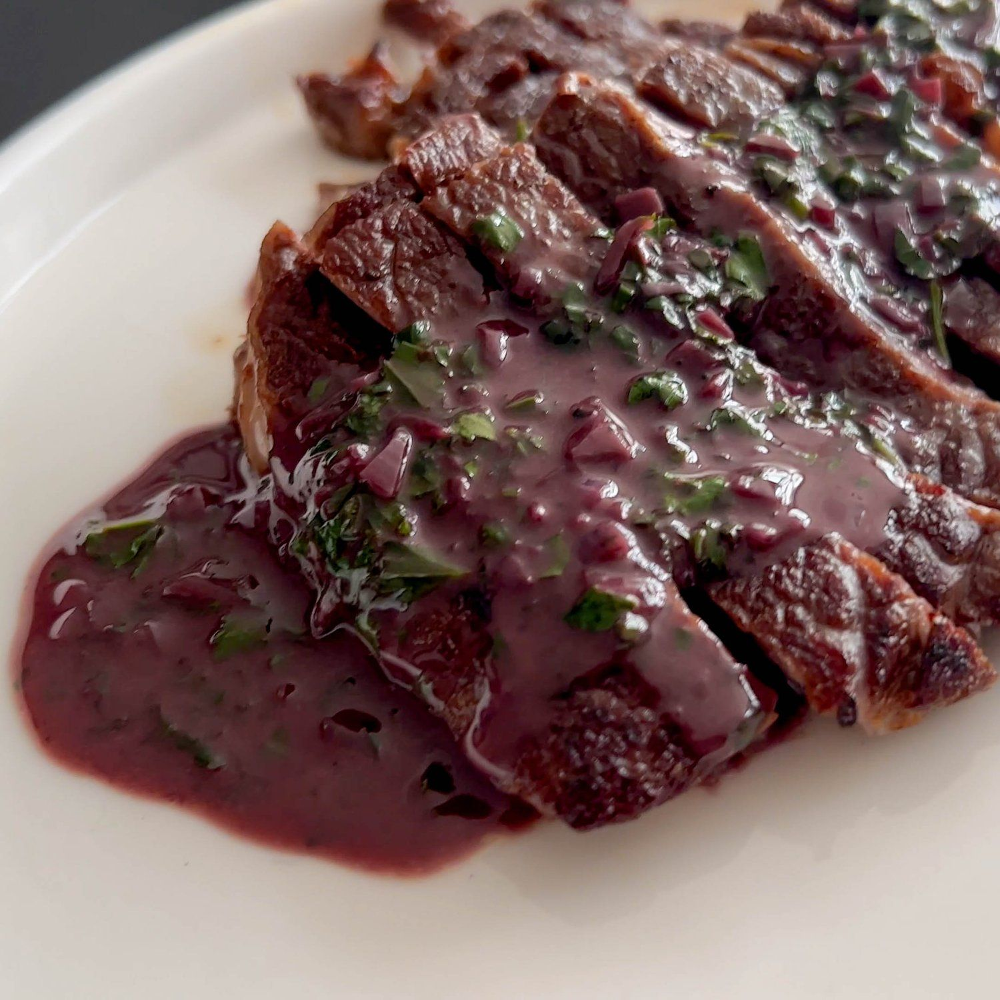

Steak!! 🥩

Description
This steak recipe is a classic pan-seared method that's quick, simple,
and delivers a juicy, flavorful result. Perfect for weeknight dinners
or special occasions, it pairs well with mashed potatoes. Additionally
a three step pan sauce to add on top for more flavor
Ingredients for this recipe
- One ribeye or sirloin steak (about One-inch thick)
- One tbsp of a high smoke point oil
- Two tbsp butter
- Two garlic cloves (crushed)
- Two sprigs fresh thyme or rosemary
- Salt and pepper
- One cup of red wine
Steps for the steak! 🥩
- Pat the steak dry with paper towels and season generously with salt and pepper.
- Put the skillet on the burner and turn it on high heat
- You will know its ready when you are able to dip your finger in water then splashing a bit on the pan and it doesn't evaperate instantly
- Once the pan is ready add the oil and wait for 10 seconds before adding the steak
- Sear the steak for 1 minute 30 seconds on each side for medium-rare (adjust for desired doneness).
- Once steak is done take it off the pan and let it rest for 5 minutes
- For the sauce now lower the heat to medium and add red wine
- Once it starts simmering add in the 2 tbsps of butter, garlic, and thyme or rosemary
- Cook for 2 more minutes and pour over the steak
- Serve with your favorite sides and enjoy!
Home